Proyecto para el curso de Modelos Multinivel de la Licenciatura en Estadística
Motivación
La calidad del transporte público es clave para la planificación de la movilidad.
La satisfacción de los usuarios es un indicador central de desempeño del servicio.
El transporte interurbano presenta desafíos específicos: puntualidad, ocupación, información disponible, heterogeneidad entre líneas.
La pregunta que buscamos responder es: ¿Qué factores explican que algunos usuarios estén más satisfechos que otros?
Metodología
Análisis exploratorio y descriptivo
Ajuste de un modelo lineal simple y verificación de los supuestos
Ajuste de un modelo multinivel
Objetivo general
Estudiar la satisfacción de usuarios del transporte interurbano considerando características individuales y diferencias entre líneas.
Las preguntas de investigación que nos hacemos son:
¿Varía la satisfacción sistemáticamente entre líneas?
¿Qué proporción de la variabilidad se debe a diferencias entre líneas?
¿Qué covariables individuales inciden en la satisfacción?
Análisis Descriptivo
Tenemos un total de 780 observaciones de individuos agrupados en 17 líneas distintas de transporte interurbano. Las líneas cuentan con un entorno de 40-50 observaciones cada una.
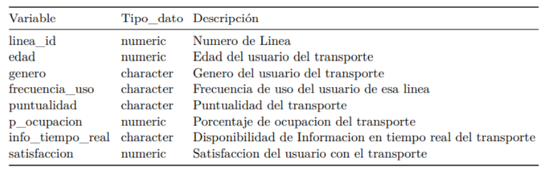
Para tener un primer acercamiento a la posible estructura jerárquica graficamos el nivel de satisfacción por línea de transporte.
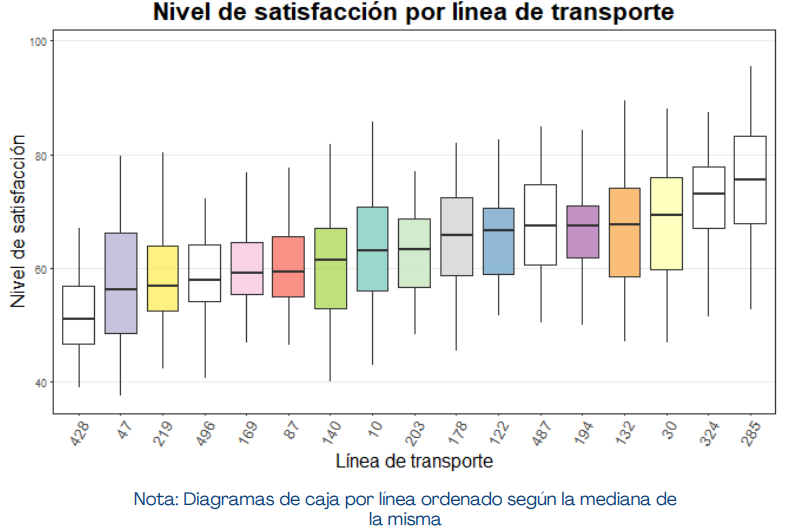
Se observa que la satisfacción de los individuos varía de acuerdo a cada línea, las diferencias son notorias lo que podría indicar una posible estructura jerárquica.
Ahora sí graficamos la satisfacción en relación a distintas variables individuales
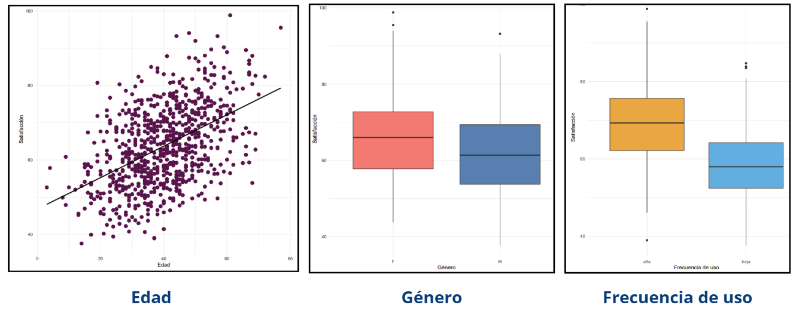
Luego graficamos la satisfacción en relación a distintas variables grupales
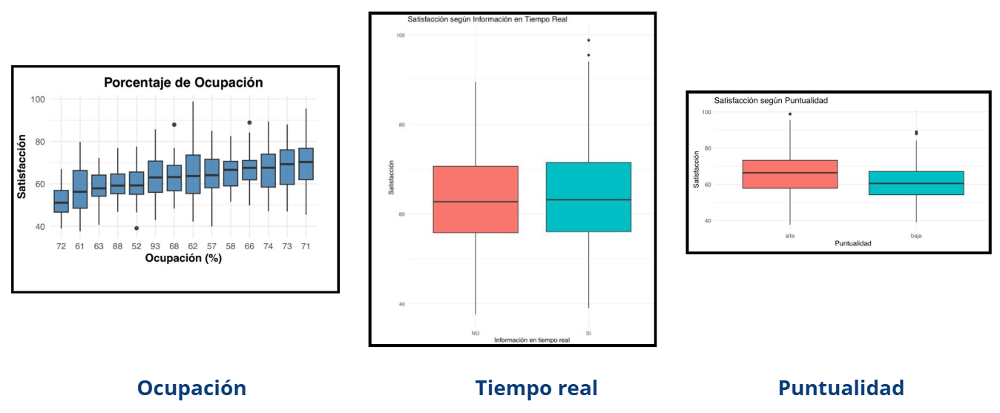
Modelo Lineal Clásico
Podemos platear si el modelo lineal clásico es suficiente para estos datos, para esto ajustamos un modelo lineal simple que contenga todas las variables.
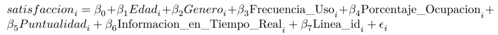
El modelo contendrá muchos niveles, por lo que ya de por sí será inconveniente su manejo.
Podemos graficar algunos diagnósticos
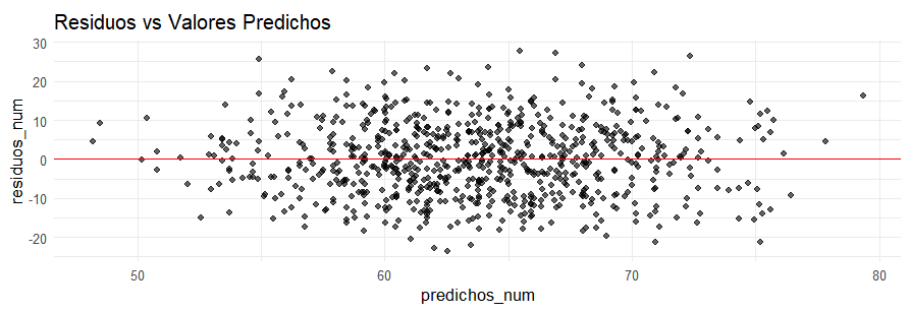
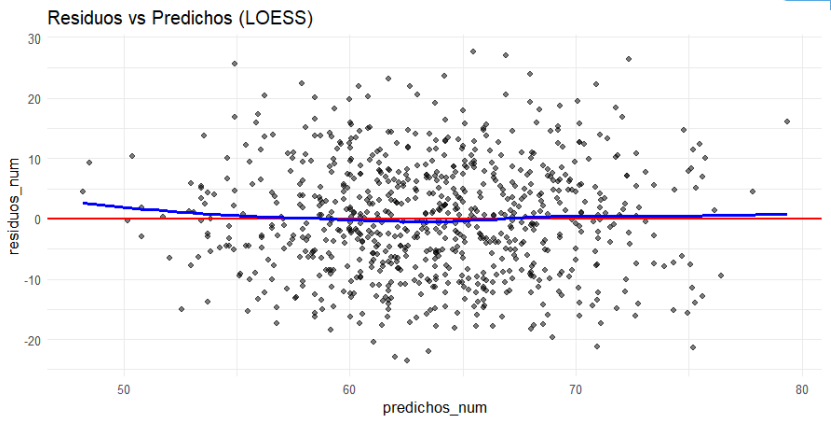
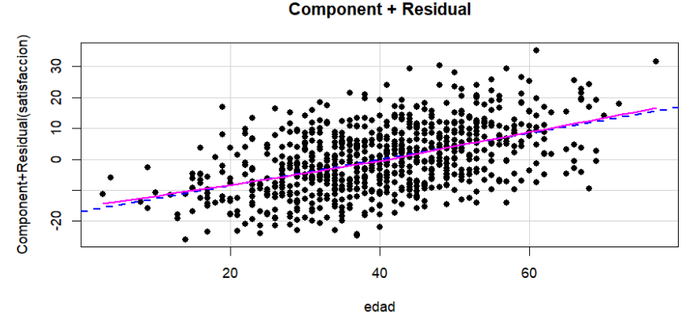
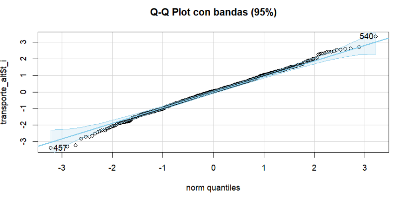
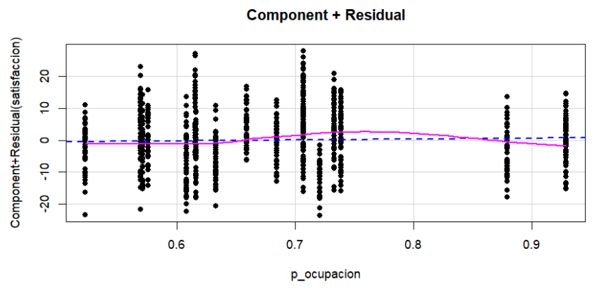
Ahora si observamos test más estadísticos y formales
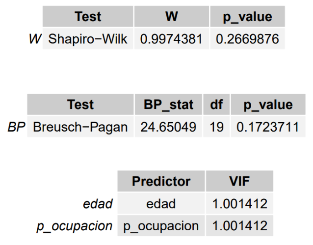
Pero vimos las observaciones agrupadas por línea, lo que rompe la independencia, además de que representar 17 líneas como dummies implica un modelo recargado y difícil de interpretar.
En conclusión, desde los supuestos clásicos el modelo ‘funciona’, pero no respeta la idea fundamental. Es necesario establecer una estructura jerárquica de los datos.
Modelo Multinivel
h2>La estructura de nuestro modelo multinivel será un modelo de efectos mixtos con intercepto aleatorio por línea.
Donde en el nivel 1 (pasajeros) tenemos la edad, género, frecuencia, porcentaje de ocupación, puntualidad, información disponible en tiempo real.
Luego en el nivel 2 (líneas) tenemos el intercepto aleatorio para cada línea
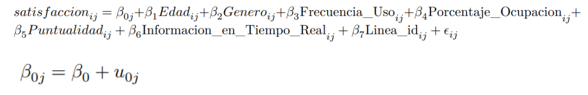
ICC y comparación de modelos
ICC es Intraclass Correlation Coefficient, nos sirve para ver qué proporción de la variabilidad total de satisfacción se debe al nivel de línea
En el modelo nulo (solo intercepto aleatorio) tenemos un ICC de 0.157, o sea entre el 15% y el 16% de la variabilidad en satisfacción se debe a diferencias entre líneas.
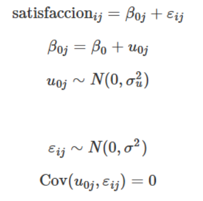
En el caso del modelo completo (con covariables) el ICC es de 0.40, lo que implica que el 40% de la variabilidad explicada por diferencias entre líneas.
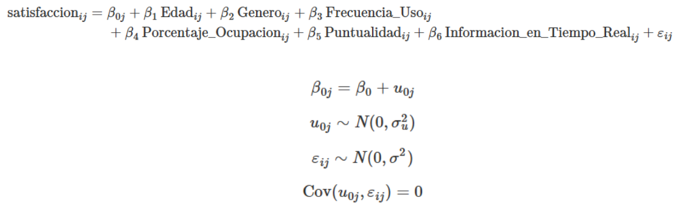
Elección de modelos
Discutiremos entre sí a los siguientes dos modelos
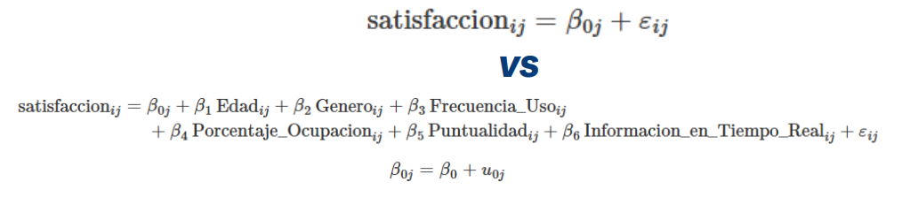
Los criterios de elección de modelos dicen que:
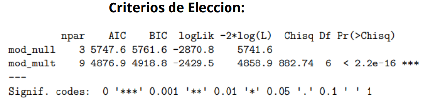
Preferimos quedarnos con el modelo multinivel porque tiene mejores indicadores en la tabla anterior
Ahora los valores de la estimación de Efectos Fijos son:
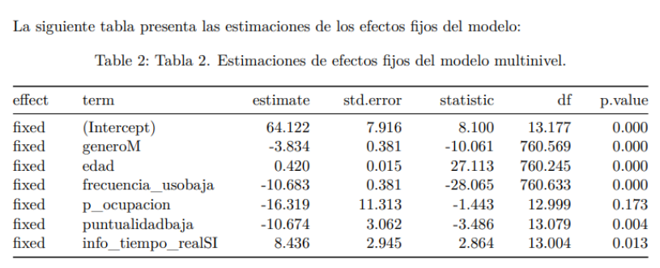
Capacidad Explicativa del Modelo Multinivel
El \(R^2\) Marginal vale 0.611, esto indica que los efectos fijos (predictores individuales) explican el 61.1% de la varianza.
El \(R^2\) Condicional vale 0.768, indica que el modelo completo (incluyendo el efecto de las líneas) explica el 76.8% de la variabilidad total en la satisfacción.
Si graficamos, vemos que si hay diferencias (variabilidad) entre las líneas
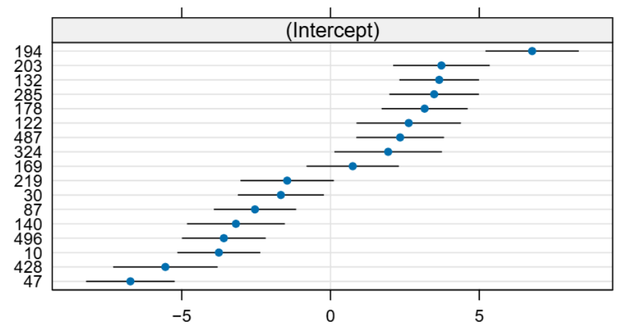
Supuestos del modelo multinivel
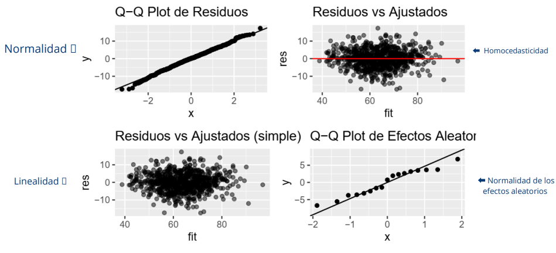
Varianza Explicada por Niveles
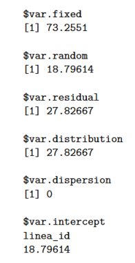
var.fixed: Representa la varianza explicada por los efectos fijos (predictores a nivel de individuo o grupo)
var.random: Es la varianza debida a las diferencias entre grupos
var.residual: Es la varianza dentro de los grupos (variación entre individuos dentro de una misma línea) no explicada por el modelo.
var.distribution vale 27.82667 y coincide con var.residual, lo que indica que el modelo asume una distribución normal para los residuos con varianza constante.
var.dispersion vale 0 lo que indica que no hay componente de sobre dispersión adicional.
var.intercept, linea_id, 18.79614 es la varianza del intercepto aleatorio entre grupos. Indica que la variabilidad entre grupos se debe a diferencias en los niveles basales (interceptos) de cada línea.
Modelos Multinivel con pendiente aleatoria
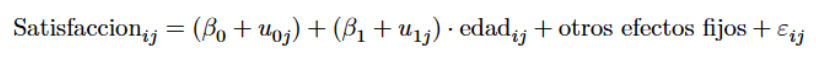
\( u_{0j} \) es la desviación del intercepto de la línea j \( u_{1j} \) es la desviación de la pendiente de la edad en la línea j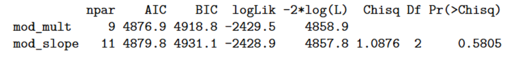
Vemos que según los criterios de selección de modelos, el modelo multinivel original que teníamos era mejor que esté nuevo, no es necesario usar modelos multinivel con pendiente aleatoria
Modelos Multinivel con interacciones
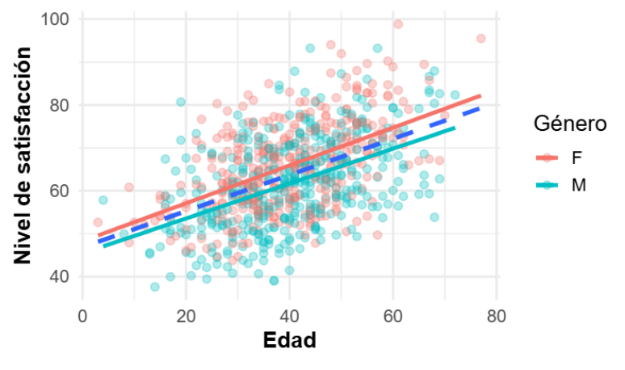
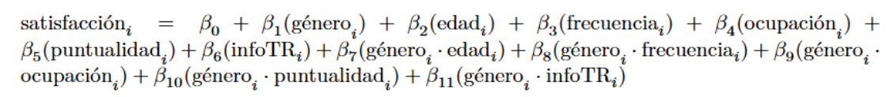
Con un intercepto aleatorio por linea \( \mu_{0j} \sim N(0, \sigma^2_u) \)
De nuevo, el modelo multinivel original tiene un mejor rendimiento que este modelo multinivel con interacciones
Conclusiones
Existen diferencias significativas de satisfacción entre líneas.
Una fracción importante de la variabilidad (15–40%) se debe al nivel línea.
A nivel individual, mayor satisfacción se asocia con mayor edad, uso frecuente, puntualidad alta, disponibilidad de información en tiempo real y género femenino (en promedio).
El porcentaje de ocupación no mostró un efecto claro en el modelo.